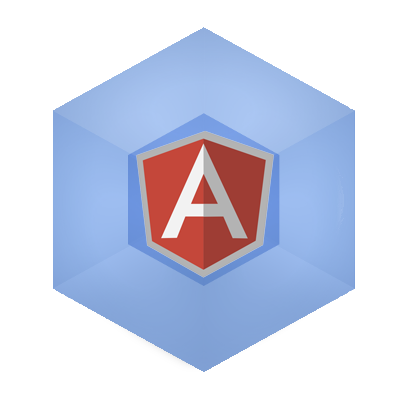

Part 1
Getting Started
There are a lot of module loaders out there: Require.js, JSPM using System.js, to name a few.
Eventually the JavaScript community will come around and land on a winning module loader. My guess is Webpack, or something very similar.
Go with Webpack. Webpack provides an elegant and multi-featured approach to module loading. It does everything I wanted it to do, and more. Really, a lot more.
Let's try it out. We'll setup a project using Webpack, including ES6 transpiling & Sass loading. In this example, we'll setup an Angular based project using Webpack.

Free free to load the basic project from Github.
File Setup
File Structure:
root
├── app
│ ├── bower_components
│ ├── core
│ │ ├──bootstrap.js
│ │ └──vendor.js
│ │
│ ├── index.html
│ ├── index.scss
│ └──index.js
├── .jshintrc
├── node_modules
└── package.json
This should be the bare minimum required to check if everything is working.
/app/index.html
<!doctype html>
<html lang="en">
<head>
<meta charset="UTF-8">
<title>Webpack & Angular</title>
</head>
<body>
<p>Angular is working: {{1 + 1 === 2}}</p>
<script src="bundle.js"></script>
</body>
</html>
/app/index.js
alert('loaded!');
Webpack
Setup
Let's create a package.json file to get started.
npm init
Agree to whatever defaults.
We're going to need a few basic dev-dependencies to get started with webpack.
npm install -D webpack
Webpack will also require a webpack configuration file: webpack.config.js. Make the file and add the following:
/webpack.config.js
'use strict';
var webpack = require('webpack'),
path = require('path');
// PATHS
var PATHS = {
app: __dirname + '/app',
bower: __dirname + '/app/bower_components'
};
module.exports = {
// config goes here
};
Webpack is a lot easier than it looks. You just need to provide an entry and an output.
Notice bundle.js is the only script we needed to load in our index.html. Everything will go into that bundle.
Later you can have multiple bundles for easy lazy-loading and code-splitting.
/webpack.config.js
module.exports = {
context: PATHS.app,
entry: {
app: './index.js'
},
output: {
path: PATHS.app,
filename: 'bundle.js'
}
}
We now have a module loader.
Let's build our bundle in the terminal.
webpack
This should create the app/bundle.js file. Check it out. It's mostly a bunch of webpack__require statements.
Webpack-Dev-Server
Webpack-dev-server is a quick and easy Node.js/Express/Socket.io app that creates your bundle.js file on the fly and reloads it on changes.
Install it as a dev-dependency.
npm install -D webpack-dev-server
But wait, there's more!
Hot Mode
Hot mode = live-reload of modules. No need to reload the entire project on every change, just load what changed. It makes sense and it's awesome.
It's not much work either. Update your webpack.config file.
/webpack.config.js
entry: {
app: ['webpack/hot/dev-server', './index.js']
}
You may want to install webpack-dev-server globally. Otherwise you'll have to run it the long way: node node_modules/.bin/webpack-dev-server --content-base app/ --hot
Run it.
npm install -g webpack-dev-server
webpack-dev-server --content-base app/ --hot
Open up http://localhost:8080/webpack-dev-server/.
It's hot.
/app/index.js
alert('hot-loaded!');
It updates amazingly fast. Again, unlike Gulp or Grunt, Webpack only needs to re-compile the module that changed.
Targeted reloading might not be important to you now, but as your project grows in size & complexity it becomes increasingly useful.
Quick Start
If you're used to using Gulp or Grunt, you probably like the time saving gulp serve, grunt serve shortcuts for running your app.
This can be accomplished with package.json scripts.
/package.json
"scripts": {
"start": "webpack-dev-server --content-base app --hot"
}
Now run npm start. Again, the app can be found at localhost:8080/ by default, or localhost:8080/webpack-dev-server for the hot-module version.
Bootstrap Angular
I like to bootstrap Angular, rather than adding ng-app="app" into the html.
/app/core/bootstrap.js
/*jshint browser:true */
'use strict';
// load Angular
require('angular');
// load the main app file
var appModule = require('../index');
// replaces ng-app="appName"
angular.element(document).ready(function () {
angular.bootstrap(document, [appModule.name], {
//strictDi: true
});
});
Notice require('angular')? That replaces adding <script src="bower_components/angular/angular.min.js">. No need for that, this is a module system.
Also note that appModule.name will be taken from index.js, whatever its name might be: angular.module('THISNAMEHERE', []).
Make the app file: index.js.
/app/index.js
module.exports = angular.module('app', []);
Finally, let's make bootstrap.js our new Webpack entry point.
/webpack.config.js
entry: {
app: ['webpack/hot/dev-server', './core/bootstrap.js']
}
Run the app (npm start). If all went well, running the app you should see: "Angular is working: true" at localhost:8080 or localhost:8080/webpack-dev-server.
Add Dependencies
Install angular.
npm install --save angular
Bootstrap will get messy if we keep loading all our dependencies in there. Let's load them in a separate file called vendor.js.
/app/core/bootstrap.js
require(./vendor')(); // run an empty function
var appModule = require('../index');
/app/core/vendor.js
module.exports = function () {
/* JS */
require('angular');
};
This file will get longer later.
Styles
Webpack doesn't just load JavaScript, it can load nearly anything we might need: styles, images, fonts, etc.
It handles these different file formats using loaders. Here's a list of available loaders.
Let's start with the Style, CSS, and Sass loaders and install them as dev-dependencies.
npm install -D style-loader css-loader sass-loader`
Webpack can use a Regex test to determine which loader to use. Add this to your webpack.config.js file.
/webpack.config.js
module.exports = {
/* context, entry, output */
module: {
loaders: [
{
test: /\.scss$/,
loader: 'style!css!sass'
}
]
}
};
Loaders process from right to left. Meaning that if a .scss file is required as in the example, it will follow this order: sass loader => css loader => style loader
Run a quick test with a style sheet.
/app/index.scss
body {
background-color: red;
}
Require the file.
/app/core/vendor.js
module.exports = {
/* Styles */
require('../index.scss');
/* JS */
require('angular');
}
Take a look, npm start, the background should now be red.
ES6 Loaders
Webpack makes it easy to use compiled languages like ES6, TypeScript, CoffeeScript, etc. Let's write our app in ES6 and compile it to ES5/ES3.
First we need some loaders. Install the dev-dependencies:
npm install -D jshint-loader babel-loader ng-annotate-loader
As before, we provide a loader object with a pattern matching test case. We'll exclude compiling packages.
/webpack.config.js
loaders: [
{
test: /\.js$/,
loader: 'ng-annotate!babel!jshint',
exclude: /node_modules|bower_components/
}
]
Webpack will take any required .js files, and run them right to left: jshint => babel => ng-annotate.
Let's use an ES6 example to make sure everything is working.
/app/index.js
module.exports = angular.module('app', []);
// default params
function printMessage (status='working') {
// let
let message = 'ES6';
// template string
console.log(`${message} is ${status}`);
}
printMessage();
Run the app, npm start, and you should see "ES6 is working" in the console.
Removing JSHint Errors
You probably saw some warnings (in yellow) when you ran the app.
You might want to remove these warnings from the console caused by jshint using a .jshintrc file. You can take Jon Papa's recommended .jshintrc or add the following:
/.jshintrc
{
"esnext": true,
"node": true,
"globals": {
"angular": true,
"console": true
}
}
Conclusion
When I made my first webpack app, I was left wondering:
What happened to the build stage?
Where's the heavy lifting we need Grunt/Gulp for?
But it's all in the few lines of code in that webpack.config file. The app is built everytime you run webpack, and built and updated on the fly when you run the webpack-dev-server.
Everything goes in the bundle.js. It fits my criteria for a good module loader: it's simple and it works.
Granted, this was a simple use case. We'll look at how Webpack handles more complicated cases in the next post, as we setup a project requiring LumX, a popular Material Design based CSS Framework for Angular.